Geo-IdeaThon
Anticipatory action for forest fire management: a geospatial early-warning approach.
View award →Geomatics engineer and Voertman-Ardoin Graduate Fellow at the University of North Texas. I build GeoAI and LiDAR workflows that turn imagery and point clouds into maps, 3D models, and decisions for cities.

Ideas and maps that placed first and second.
Anticipatory action for forest fire management: a geospatial early-warning approach.
View award →Enhancing crop monitoring using UAV.
View award →2024
“I like problems where the answer is a map, and the map changes how a city works.”
I trained as a geomatics engineer at Kathmandu University (CGPA 3.91), then spent 16 months at Kathmandu Metropolitan City, moving from intern to GIS and GeoAI Engineer. There I helped build the city's digital address system, extracting about 300,000 building footprints with deep learning, and worked on its municipal information system, flood and CCTV mapping, and 3D visualization.
Now at the University of North Texas, I research whether photo-trained AI models can understand 3D LiDAR data, and how machine learning with IoT sensors can predict air temperature where there are no weather stations.
In the field in Nepal.
Five projects that show how I work: the problem, the approach, and what came out of it.
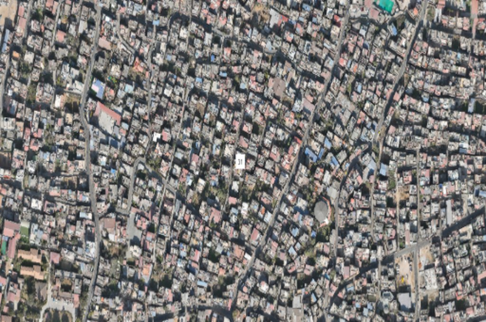
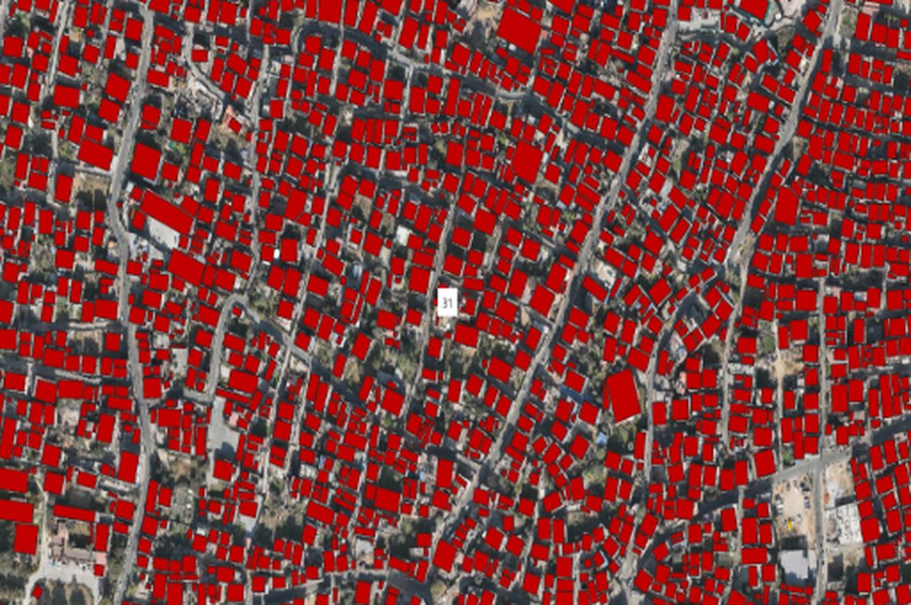
Click a step, or let it play.


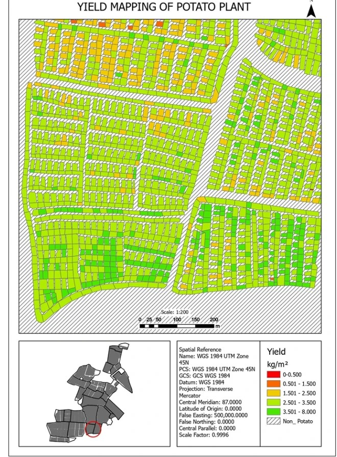


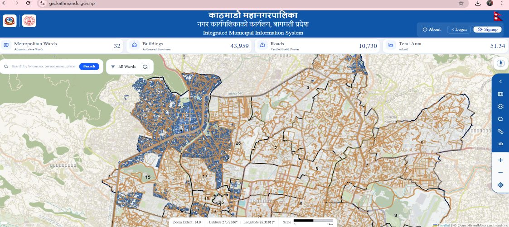
Front-end development of Kathmandu's municipal GIS portal and its 3D building view.
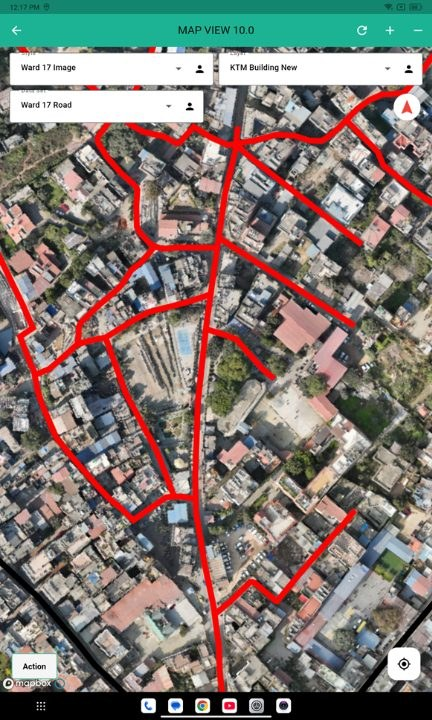
Worked on creating a data collection app for Kathmandu Metropolitan City, used to collect point, line, and polygon data in the field over ward imagery, building, and road layers.
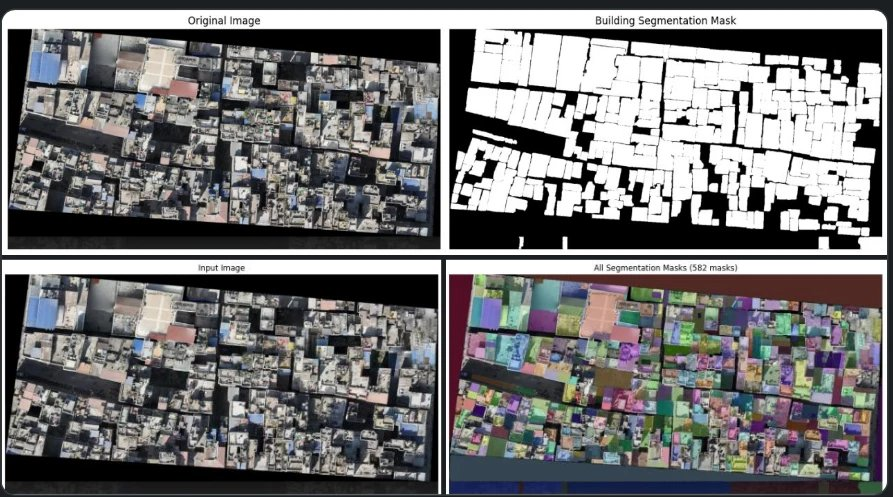
Turned an aerial image into a building mask and 582 individual segmentation masks.

House-numbering system linked to roads and the city address database.

2020 airborne LiDAR rendered in an ArcGIS Pro 3D scene, the starting point for the 3D building models.
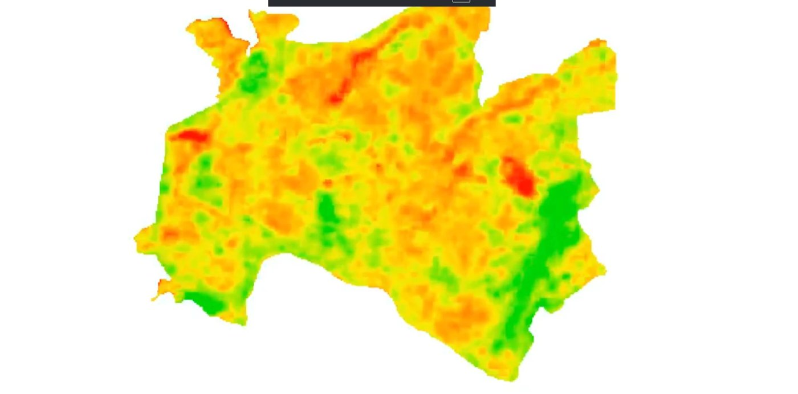
Land surface temperature from satellite imagery. Paper →
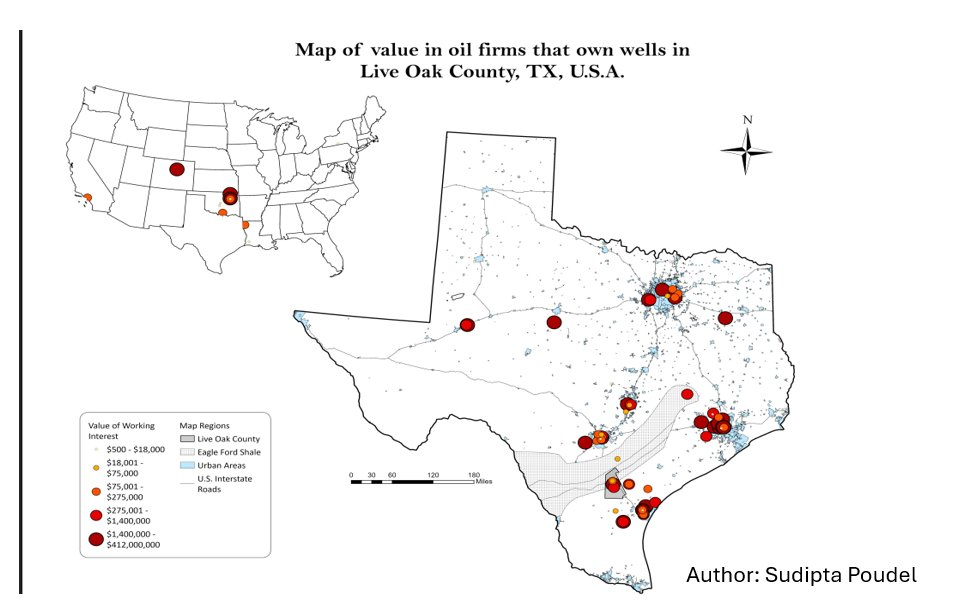
Graduated-symbol map of working-interest value, with Eagle Ford Shale and a U.S. inset.
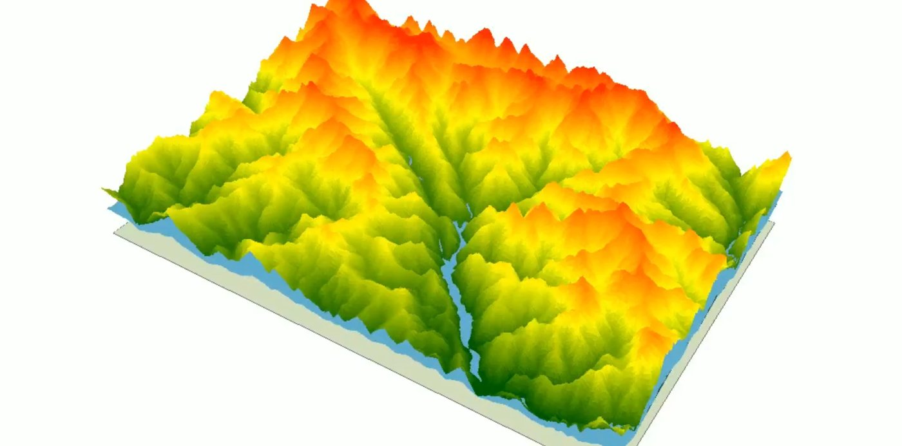
Flood inundation over a DEM, visualized in 3D.
Plot-level potato yield (kg/m²) estimated from multispectral UAV imagery with machine learning. Published in the GIS-IDEAs Journal. Paper →
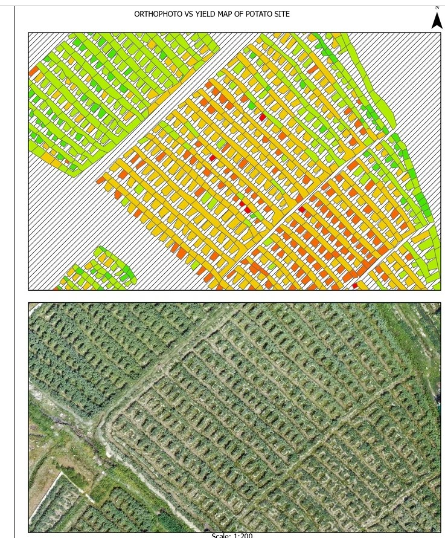
The drone orthophoto of the potato site next to the estimated yield for each plot.
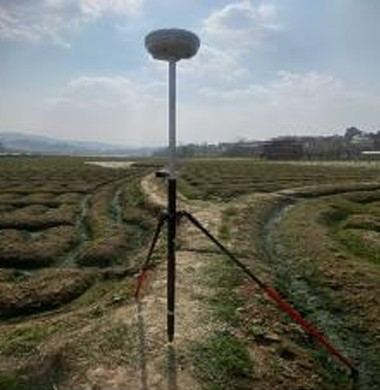
One of the 9 ground control points set with differential GPS to georeference the drone imagery.

Top-down drone view of the rice plots used in the yield estimation study. Project →

Drone survey and digital database preparation for the city.
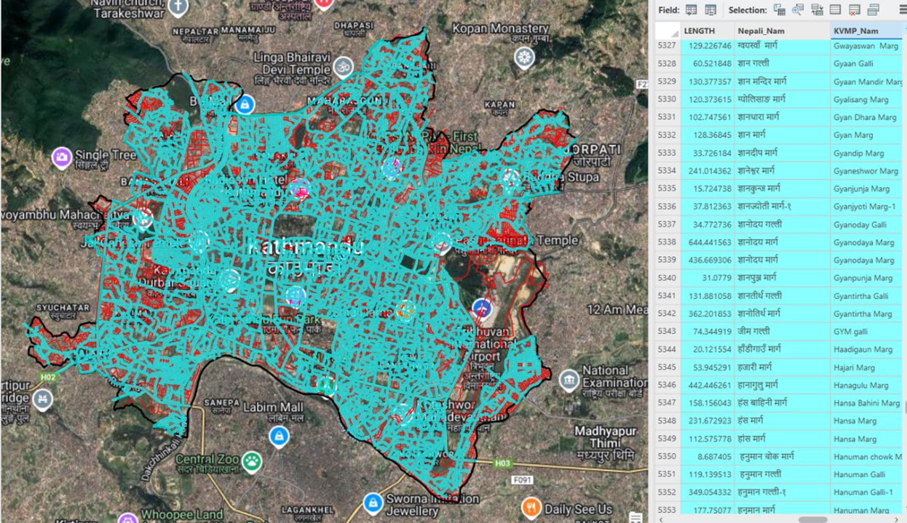
Road network extraction with AI, road naming, and route allocation.
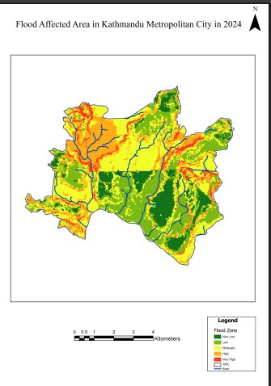
Flood extent in Kathmandu Metropolitan City and across Nepal.
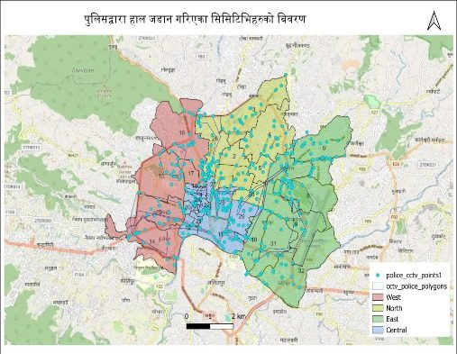
Mapped CCTV camera locations across Kathmandu Metropolitan City.
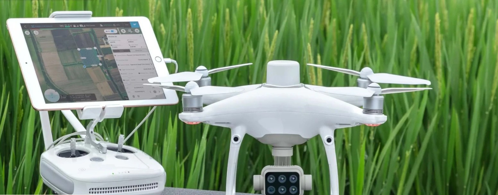
Planned automated flights on a tablet and captured multispectral imagery of the rice plots.

Allocated waste disposal sites for Kathmandu Metropolitan City.
Public web map of Kathmandu Metropolitan City, in English and Nepali. See case study 02.

Urban flood extent mapping project.
My path from Nepal to Texas. Pick a place to zoom in.
Click a card to see more.
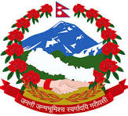
Sudipta Poudel et al.
GIS-IDEAs Journal, 2(2)
PublishedSudipta Poudel et al.
Journal of Land Management and Geomatics Education
PublishedSudipta Poudel et al.
European Journal of Preventive Medicine, 2025
PublishedSudipta Poudel et al.
Geo-World
PublishedSudipta Poudel et al.
ResearchGate
PublishedSudipta Poudel et al.
Research poster, University of North Texas
PosterWant to discuss a project, an internship, or just say hi? My inbox is open.
+1 (940) 364-1968 poudelsudipta4014@gmail.com